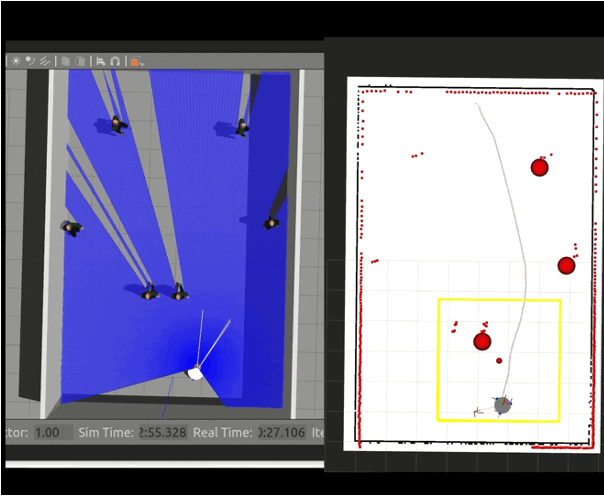
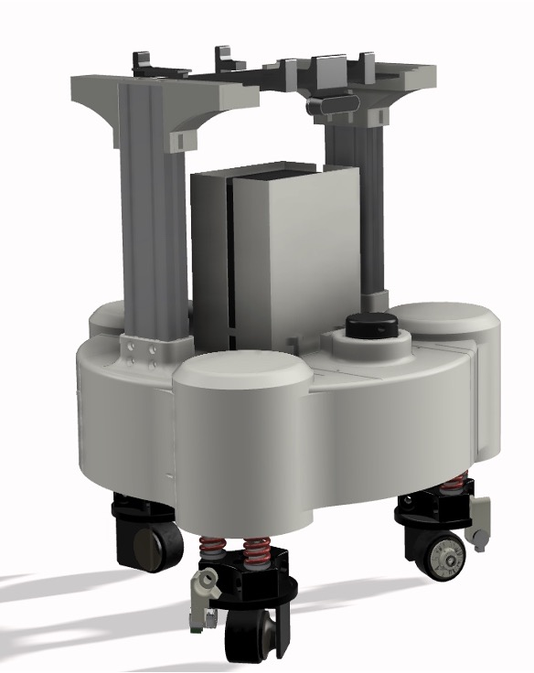
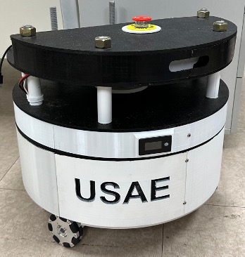
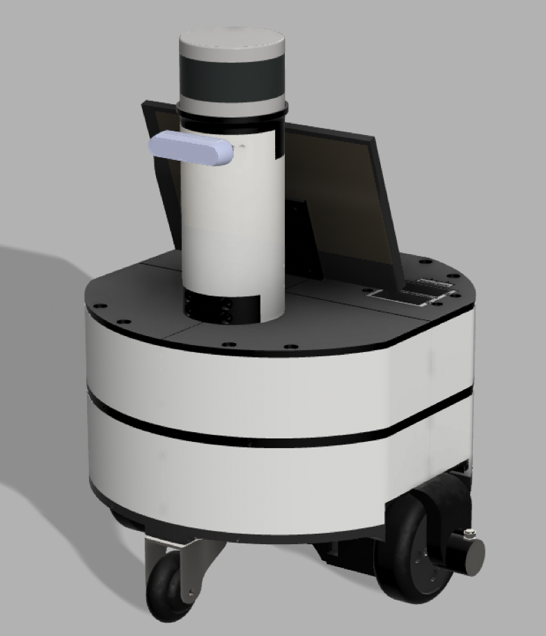

Mingyu Kim
k0136000@postech.ac.kr

Welcome
Thank you for visiting my profile page.
I am a Ph.D. student in AX at POSTECH, advised by Prof. Soohee Han.
During my master's studies, my research focused on dynamic obstacle avoidance for mobile robot navigation, particularly leveraging deep learning and imitation learning to generate human-like navigation trajectories.
My current research interests include:
Vision-Language-Action Models
Robotic Manipulation
Multimodal Learning
News
- [Sep 2026] Started my Ph.D. program in AX at POSTECH under the supervision of Prof. Soohee Han.
- [Sep 2026] HADP: Hybrid A*-Diffusion Planner for Robust Navigation in Dynamic Obstacle Environments was published in IEEE Access.
- [Aug 2026] HiMSELF: A Hierarchical Misbehavior Classification with Sequence Embedding by Latent Features in Vehicular Ad-Hoc Networks was published in IEEE Access.
- [Feb 2026] Received my M.S. degree in Applied Artificial Intelligence from Myongji University, where I was advised by Prof. Jaehee Jung.
- [Oct 2025] Started research on graph-based pedestrian trajectory prediction.
- [Oct 2025] The first open-source robot project under Gradus, DiffDriveRobot, has been released.
- [Oct 2025] Launched the open-source robotics project Gradus.
- [Sep 2025] One paper on imitation-learning-based dynamic obstacle avoidance was accepted for publication in IEEE Access.
- [Sep 2025] One paper on hierarchical misbehavior classification for V2X communication systems was accepted for publication in IEEE Access.
- [Mar 2025] Submitted a paper to IROS 2025. (Rejected in Jun 2025)
- [Oct 2024] Submitted a paper to IEEE RA-L. (Rejected in Dec 2024)
- [Apr 2024] I have been selected as the principal investigator for a research project funded by the National Research Foundation's "석사과정생연구장려금지원사업" (₩12,000,000).
Research
(* denotes equal contribution)

1. HADP: Hybrid A*-Diffusion Planner for Robust Navigation in Dynamic Obstacle Environments
[Paper]
IEEE Access (2026.9) Impact Factor: 3.6
We proposed the Hybrid A*-Diffusion Planner (HADP) to overcome the generalization and data-efficiency limitations of pure diffusion-based planning in dynamic environments. Our approach uses A* for global path planning in obstacle-free regions and a conditional diffusion model fed by a semantic map, robot pose, and local goal to generate responsive local avoidance trajectories upon detecting dynamic obstacles.

2. HiMSELF: A Hierarchical Misbehavior Classification with Sequence Embedding by Latent Features in Vehicular Ad-Hoc Networks
[Paper]
IEEE Access (2026.8) Impact Factor: 3.6
We propose HiMSELF, a misbehavior classification system that learns latent sequence embeddings of multi-class BSM data, applies hierarchical clustering to construct a two-stage classification hierarchy, and achieves an average F1-score of 0.9918 on 19 misbehavior classes, outperforming existing models.
Robot Development and Implementation
All of these projects were conducted solely by myself.
These robots are now being unified and released as part of an open-source robotics platform called Project Gradus.

Swerve-Drive Robot

Omni-Wheel-Based Robot

Differential-Drive Robot

Minoid Semi-Humanoid Robot
Technical Skills
- Python
- C
- JavaScript
- PyTorch
- Tensorflow
- NestJS
- ROS
- Gazebo
- Fusion 360